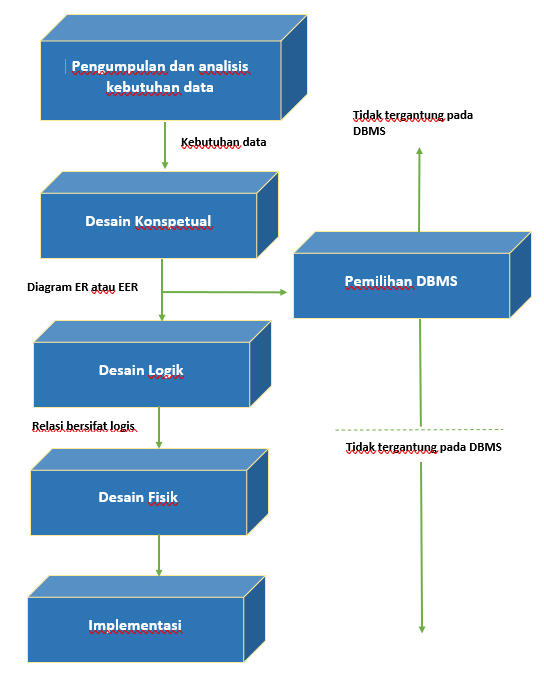

Andi Andhika
Mahasiswa | D121181511 | Founder of Villa Bukit Hijau Malino
Mahasiswa | D121181511 | Founder of Villa Bukit Hijau Malino
Desain basis data adalah pengorganisasian data menurut model
basis data . Perancang
menentukan data apa yang harus disimpan dan bagaimana elemen data saling berhubungan. Dengan
informasi ini, mereka dapat mulai menyesuaikan data dengan model database.
Tujuan Desain Database :
- Menyajikan data dan hubungan antar data yang diperlukan oleh pemakai dan aplikasi
- Mempermudah pemahaman informasi
- Melengkapi model data yang mendukung transaksi-transaksi yang diperlukan
- Mendukung proses permintaan dan performance seperti waktu respon, waktu proses dan tempat
penyimpanan
System Definition :
Mendefinisikan Scope dari sistem basis data, pemakai dan
aplikasi Antarmuka untuk pemakai, batasan response time,
kebutuhan penyimpan dan pemrosesan diidentifikasi.
Database Design
Pada akhir dari tahap ini , desain konseptual, desain logika
dan fisik dari sistem basis data dari DBMS sudah siap.
Database Implementation
Meliputi proses menentukan definisi basis data eksternal,
konseptual dan internal, membuat file basis data kosong dan
implementasi aplikasi perangkat lunak.
Loading or Data Conversion
Basis data dipopulasikan dengan menyimpan data langsung
atau mengubah file yang sudah ada ke format sistem basis
data.
Application Conversion
Aplikasi perangkat lunak dari sistem lama dikonversikan
ke sistem baru.
Testing and Validation
Sistem baru diuji coba dan divalidasi.
Operation
Sistem basis data dan aplikasi dioperasikan. Biasanya
sistem lama dan baru dioperasikan secara paralel dalam
beberapa waktu.
Monitoring and Maintenance
Selama tahap operasional, sistem secara tetap dimonitor
dan dipelihara. Perubahan dan pengembangan dapat
terjadi baik pada isi data maupun aplikasi perangkat
lunak.

TAHAP 1: PENGUMPULAN DAN ANALISIS
KEBUTUHAN DATA
Aktifitas yang dilakukan :
▪ Area aplikasi mayor dan kelompok pemakai yang akan
menggunakan basis data atau pekerjaan / aplikasinya
▪ Dokumen yang sudah ada yang berhubungan dengan aplikasi
dipelajari dan dianalisa. Dokumen lain seperti police manual,
form, report dan struktur organisasi ditinjau kembali untuk
menentukan dan menguji apakah dokumen-dokumen
tersebut berpengaruh terhadap kumpulan data dan proses
spesifikasi.
▪ Lingkungan operasi saat ini dan rencana penggunaan
informasi. Menganalisa tipe transaksi dan frekuensi
penggunaannya dan aliran informasi dalam sistem.
Karakteristik geografi seperti pemakai, transaksi asli, tujuan
pelaporan. Data input dan output diperinci
▪ Penulisan respon dari kuesioner pemakai potensial untuk
mendapatkan informasi yg berharga
3 Pendekatan Dalam Manajemen Kebutuhan :
a) Terpusat (centrelized),
b) View Integration,
c) Kombinasi keduanya
TAHAP 2: DESAIN DATABASE
KONSEPTUAL
A. DESAIN SKEMA KONSEPTUAL
▪ Memberikan gambaran yang lengkap dari
struktur basis data yaitu arti, hubungan, dan
batasan-batasan.
▪ Conceptual schema bersifat tetap
▪ Alat komunikasi antar pemakai basis data,
designer, dan analis.
▪ Harus bersifat:
✓Mampu menyatakan relationship, batasan-batasan
✓Diagram
✓Formal, minimum dalam menyatakan spesifikasi
data (tidak ada duplikasi)
✓Simple
B. DESAIN TRANSAKSI DAN APLIKASI
Transaksi dan User Interface
▪ Pada saat basis data didesain, aplikasi dari transaksi
utama harus sudah diketahui
▪ Transaksi-transaksi baru dapat didefinisikan
kemudian
▪ Tentukan karakteristik dari transaksi dan periksa
apakah basis data sudah memuat semua informasi
untuk melaksanakan transaksi
▪ Transaksi dapat dibagi dalam 3 bagian yaitu: retrieval,
update, mixed
▪ Tahap 2A dan 2B sebaiknya dilaksanakan secara
paralel dengan menggunakan umpan balik agar
didapat skema desain dan transaksi yang stabil
DESAIN TRANSAKSI
Teknik yang umum digunakan adalah mengidentifikasi
parameter input/output dan aliran fungsi internal.
Transaksi dikelompokkan dalam 3 kategori :
1) Retrieval Transaction
Untuk menampilkan data ke layar atau untuk
produksi pelaporan.
2) Update Transaction
Untuk memasukkan data baru atau memodifikasi
data yang sudah ada pada basis data.
3) Mixed Transaction
Untuk aplikasi yang komplek yang melakukan
retrieval dan update. Contoh : Pemesanan tiket
secara online, retrieval transaction → menampilkan
daftar semua pesawat, update transaction → booking
tempat duduk pada jalur tertentu
DESAIN USER INTER FACE
Beberapa aturan pokok dalam merancang User Interface:
1. Pemberian nama form jelas, menerangkan kegunaan dari form dan
laporan
2. Pemberian Intruksi dapat dimengerti
3. Pengelompokan secara logik dan pengurutan field
4. Tampilan form/report secara visual
5. Nama field familiar
6. Pemakaian istilah dan singkatan konsisten
7. Penggunaan warna konsisten
8. Ruang yang tersedia dan cakupan untuk field pemasukan data
9. Perpindahan kurson yang tepat
10.Perbaikan kesalahan untuk karakter individual, maupun field secara
keseluruhan
11.Pesan kesalahan untuk nilai yang tdk diterima
12.Fiel pilihan ditandai dengan jelas
13.Pesan penjelasan untuk field
14.Penanda akhir yang menyatakan proses sudah selesai
TAHAP 3: PEMILIHAN DBMS
Faktor dalam Pemilihan DBMS :
▪ Faktor teknis: berhubungan dengan ketepatan DBMS yang dipilih
(tipe DBMS : relational, object relational dll) Struktur penyimpanan,
storage, akses path, ketersediaan user interface dan programmer,
bahasa query, dll
▪ Faktor ekonomi: Biaya Software, biaya Hardware, Biaya
pembuatan database dan konversi, biaya Maintenance, Personal cost
,training, operasi.
▪ Faktor Organisasi : Struktur organisasi, Personal yang terbiasa
dengan sistem yang terdahulu , Ketersediaan dari service vendor
TAHAP 4 : PEMETAAN MODEL DATA
(DESAIN BASIS DATA LOGIKA)
Membuat skema konseptual dan skema eksernal dalam model data dari
DBMS terpilih.
Proses pemetaan dalam dua bentuk :
1. Pemetaan yang Tidak Tergantung pada Sistem (SystemIndependet Mapping )
Pada bentuk ini, pemetaan tidak mempertimbangkan karakteristik
khusus atau kasus khusus yang diaplikasikan ke implementasi DBMS
dari model data.
2. Penyesuaian Skema ke DBMS yang Spesifik (Tailoring
the Schemas to Specific DBMS )
DBMS yang berbeda mengimplementasikan model data dengan
menggunakan pemodelah khusus. Hasilnya merupakan pernyataan DDL
dari DBMS yang dipilih
TAHAP 5 : DESAIN DATABASE SECARA
FISIK
▪ Proses pemilihan struktur penyimpanan dan jalur akses
pada file-file basis data untuk mencapai penampilan yang
terbaik pada bermacam aplikasi.
▪ Dirancang spesifikasi-spesifikasi untuk basis data yang
disimpan yang berhubungan dengan struktur-struktur
penyimpanan fisik, penempatan record dan jalur akses.
Beberapa petunjuk dalam pemilihan perancangan
basis data secara fisik :
1. Waktu Respon
• Waktu transaksi basis data untuk menerima respon selama
eksekusi.
• Waktu respon dipengaruhi waktu akses basis data untuk data
item yang ditunjuk oleh suatu transaksi.
2. Penggunaan Ruang Penyimpanan
Jumlah ruang penyimpanan yang digunakan oleh file basis
data dan struktur- struktur jalur akses.
3. Transaction Throughput
Rata-rata jumlah transaksi yang dapat diproses per menit oleh
sistem basis data, dan merupakan parameter kritis dari
sistem transaksi (misal : digunakan pada pemesanan
tempat di pesawat, bank, dll).
TAHAP 6 : IMPLEMENTASI BASIS DATA
▪ DBA bersama desainer basis data menggunakan pernyataan
dalam DDL , SDL (Storage Definition Language) dari DBMS
terpilih digunakan untuk membuat skema basisdata dan file
basis data (kosong).
▪ Basis data kemudian dipopulasikan dengan data.
▪ Jika data diubah dari sistem komputerisasi sebelumnya, rutin
konversi diperlukan untuk format kembali data untuk
menyimpan ke basis data baru.
▪ Transaksi basis data harus diimplementasikan dengan aplikasi
yang dibuat programmer
▪ Melakukan uji coba kode porgram dengan perintah DML.
▪ Jika transaksi siap dan data disimpan ke basis data, tahap
rancangan dan implementasi selesai dan tahap operasi dari
sistem basis data dimulai.